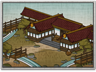

Requires
- Buildings: 
- Arts:

Enables
- Buildings:

Basic Building Statistics (can be modified by difficulty level, arts, skills, traits and retainers)
- Cost: 1520
- +10% bonus to tax rate in this province
- Improves the spread of influence (+3 influence)
- Enables recruitment of Rank 1 shirabyoshi
Clan Effects
- Each clan chain building enables you to sustain one additional shirabyoshi (to a maximum of 5)
Description
The good earth is the source of all power.
The shinden improves clan influence and tax rate effects. Primarily concerned with land and financial oversight, this is an organisation that oversees all government business. The day-to-day issues of running people's lives, collecting taxes and making sure that criminals are brought to book are left to lesser departments.